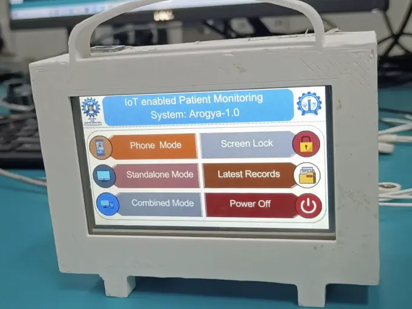
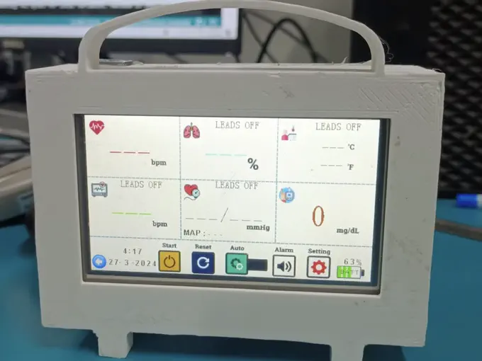

Arogya-1.0 patient monitor
Basic diagnostics for rural areas with no medical facilities at all. That constraint drove the product: portable, battery-operated, and able to run standalone.
- Device
- A portable monitor in a 3D-printed case with a carry handle and a touchscreen, easy to take wherever it’s needed. ECG electrodes, a pulse oximeter and heart-rate sensors feed readings for heart rate, SpO2, temperature, respiration, blood pressure and glucose. The longer-term plan was to share readings through the cloud, so a doctor elsewhere could monitor patients when none is available locally.
- My part
- Sensor work over about two and a half months: extracting vital signs from the sensors, including heart rate from an AD8232 ECG module and a pulse-rate algorithm I implemented from a research paper. I calibrated the readings against an Omron monitor, and they tracked it closely.

